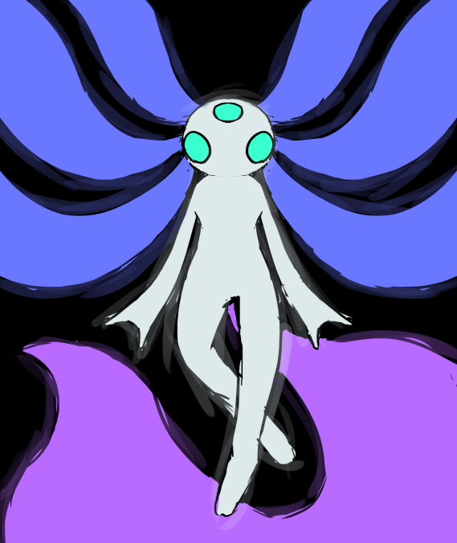
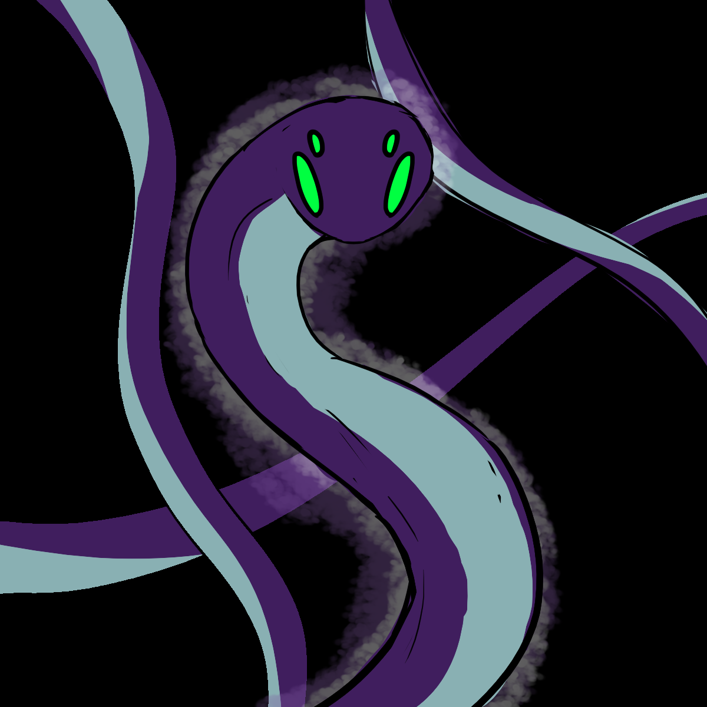
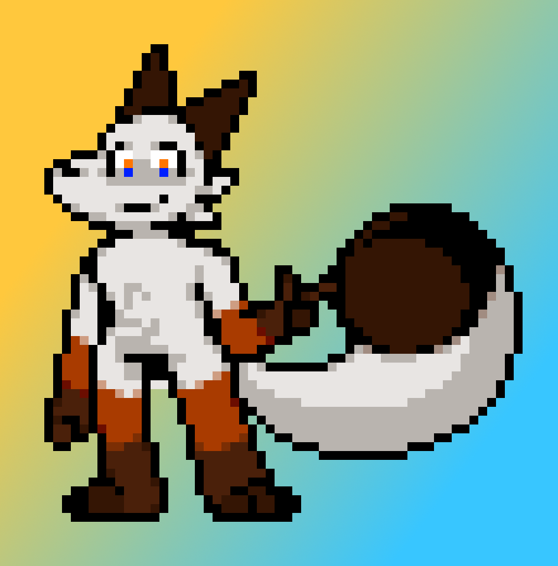
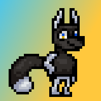
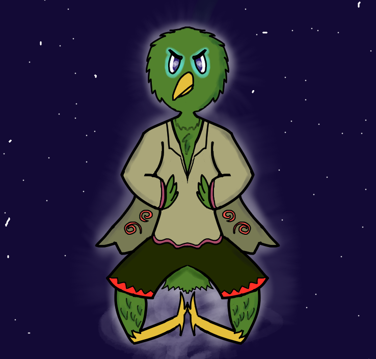

Hamester
HamesterCharacters
This page contains most of the characters in my universe I've been trying to build sometime. Maybe if I get to expanding it even more, this website could turn into a sort of a host for the Wiki for it. Most of the art on this page was made by Axovoxel.
The World Overview
Since the beginning of times, the balance of the universe was overseen by the Deity of Time named Xa, the Deity of Space named Oth, and their 8 folowers put in control of each element and its direct opposite: Fire as opposed to Ice, Earth as opposed to Air, Water as opposed to Vapor, and Nature as opposed to Rot. Each folower's physical form takes the shape of an anthropomorphic animal, opposites of each other share the same speices:
- Hamester the Pyromancer Fox
- Frysen the Cryomancer Fox
- Zemothel the Geomancer Griffon Vulture
- Bogul the Aeromancer Parrotlet
- Hyra the Hydromancer Shark
- Paraoh the Atmomancer Shark
- Faenah Physiomancer Moth
- Tamuth the Necromancer Moth
Deity of Time's takes the physical form of an Axolotl, and Deity of Space's takes the physical form of a Snake.
Xa
Xa [za] (They/Them) - Deity of Time. From their infinite gills flow scribes telling of everthing that has ever happened, is happenning, will happen, and will never happen. They don't intervine in the natural flow of time, but are able to see all the possibilities, and in the worst case they are able to restart the timeline.
Xa resembles a three-eyed axolotl with white skin, cyan glowing eyes. The length of their gills is ambigous, they span many lightyears, the transparency of the gills is periodic across their whole length and may be completely transparent for long distances to then come into existance at random points in space or time, which is percieved by inhabitants of nearby planets as northern lights.
Oth
Oth [oθ] (They/Them) - Deity of Space. They orbit Xa and their followers in order to provide protective shield for the overseers. They put the "space" into space-time and are in control of the expansion of the universe.
They resemble a long purple viper with four acid green eyes. Their length cannot be measured by any scientific methods.
Hamester
Hamester [hæmɛstɚ] (He/Him) - God of Fire, one of the eight folowers of Xa, who is in control of the element of fire. He is able to withstand the highest of temperatures in the universe, and the heat of his flames is able to melt or even completely disintegrate any matter within seconds.
His physical form resembles an arctic fox with white fur, black ears with orange lynx-like tufts. His arms and legs from palms to shoulders and from feet to waste have black to brown to orange to white gradient. His eyes have a dual colored (blue and orange) iris.
Hamester has a brother named Frysen.
Frysen
Frysen [fɹaɪzɛn] (He/Him) - God of Ice, one of the eight folowers of Xa, who is in control of the element of ice. He is able to withstand the lowest of temperatures, and able to instantly freeze anything to absolute zero.
His physical form resembles an arctic fox with black fur. He has frost light-blue hands and feet.
His eyes have a dual colored (blue and orange) iris, same as his brother Hamester.
He has a scar on his chest, as a result of a cheap attack by an unknown corvid entity.
Zemothel
Zemothel [zɛmoθɛl] (He/Him) - God of Earth, one of the eight folowers of Xa, who is in control of the element of earth.
Zemothel's takes the physical form of a brown griffon vulture.
Bogul
Bogul [bəʊɡəl] (He/Him) - God of Air, one of the eight folowers of Xa, who is in control of the element of air. He's in control of all things in the gaseous state, on the lower level he may create the strongest of hurricanes and tornadoes.
His physical resembles a parrotlet, with green feathered head, yellow body, light purple tail, cyan outlined purple eyes and yellow beak.
Hyra
Hyra [haɪ̯ɹə] (She/Her) - God of Water, one of the eight folowers of Xa, who is in control of the element of water. She has a british accent.
Paraoh
Paraoh [pɛːɹəʊ] (He/Him) - God of Vapor, one of the eight folowers of Xa, who is in control of the element of vapor.
Faenah

Faenah [feɪnə] (She/Her) - Godess of Nature, one of the eight folowers of Xa, who is in control of the element of nature.
Her physical form resembles a desaturated yellow furred moth covered in green glowing in the dark vanes. Neck-fluff has desaturated brownish color. Her bushy anteni are bright yellow and glow in the dark. Her bright green eyes also glow in the dark. She has a staff made out of birchwood with an orb on top of it.
Image shows, how she would look in complete darkness.
Tamuth
Tamuth [tæməθ] (She/Her) - Godess of Rot, one of the eight folowers of Xa, who is in control of the element of rot.
Tamuth's takes the physical form of a death's-head hawkmoth. She weilds a staff made out of dark wood riddled with bones.